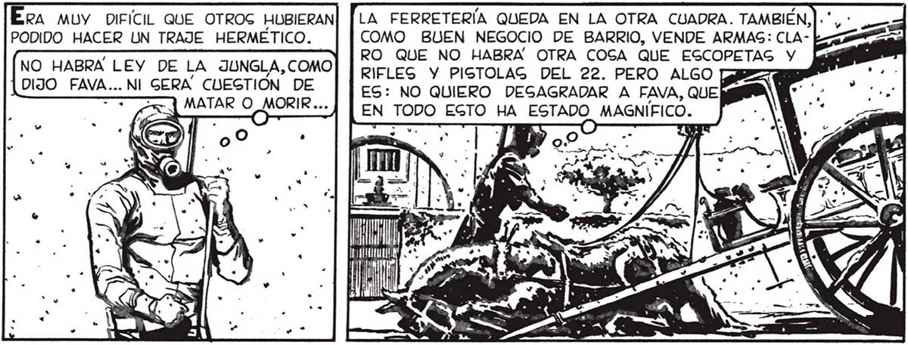
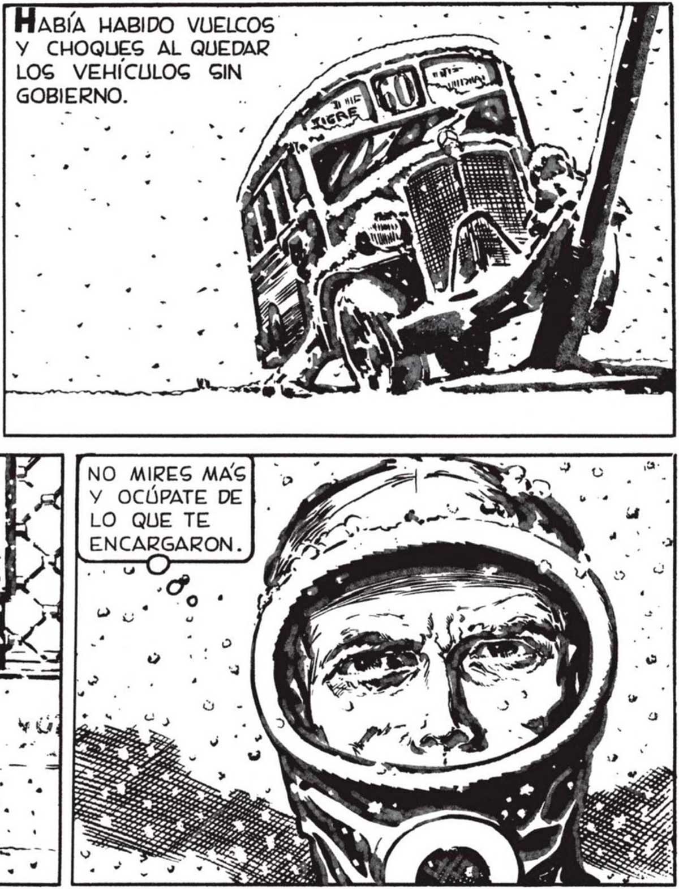

EL RUIDO HABIA HECHO ABRIR PUERTAS y VENTANAS... LOS COPOS, SILENCIOGOS, SlNIEST Re ECI E q” y pa e ( AAA —— we MB / [pr te RAMENTE BELLOS, HABÍAN HECHO.. EN LA AVENIDA ERA MAG FACIL __ APRECIAR LA TERRIBLE MAG—— + NITUD DE LA CATAÁGTROFE. Pr k pao É e nr 155 88 En eL dal A ... SU OBRA. EN EL DESPACHO DE BEBIDAS DEL ALMACÉN VI CLIENTES QUE APENAS Gl HABÍAN ALCANZADO A LEVANTARSE DE | LA SILLA. ... DE LA ENORME SUERTE QUE HABÍAMOG TENIDO. BS) NO GOLO POR TEa e AUNQUE CREO QUE AVAL EXAGERO: LAS ARMAS NO HARAN FALTA...¡S! NO HA GOBREVIVIDO NADIE ! fr” ÉN AHORA ME DABA CUENTA CABAL... 9 NER LA CAGA BIEN | CERRADA CUANq DO EMPEZÓ LA NEVADA Y HABER“| NOS DADO CUENTA A TIEMPO DE LO QUE OCURRÍA, GlNO TAMBIÉN POR TENER NUEGTRO TALLER DE *HOBYSTAG” TAN BIEN EQUIPADO... RA MUY DIFÍCIL QUE OTROS HUBIERAN PODIDO HACER UN TRAJE HERMÉTICO. NO HABRA LEY DE LA JUNGLA, COMO DIJO cl NI GERA CUEGTIÓN DE ABÍA HABIDO VUELCOS y CHOQUES AL QUEDAR LOG VEHÍCULOG GIN GOBIERNO. NO MIRES MAS Y OCÚPATE DE LO QUE TE EXPRES LA FERRETERÍA QUEDA EN LA OTRA CUADRA. TAMBIÉN, COMO BUEN NEGOCIO DE BARRIO, VENDE ARMAS: CLARO QUE NO HABRA OTRA COSA QUE ESCOPETAG Y RIFLES Y PISTOLAG DEL 22. PERO ALGO [YB : ES: NO QUIERO DESGAGRADAR A FAVA, QUE EN ta EGTO HA la MAGNÍFICO. ES 1000000 45

